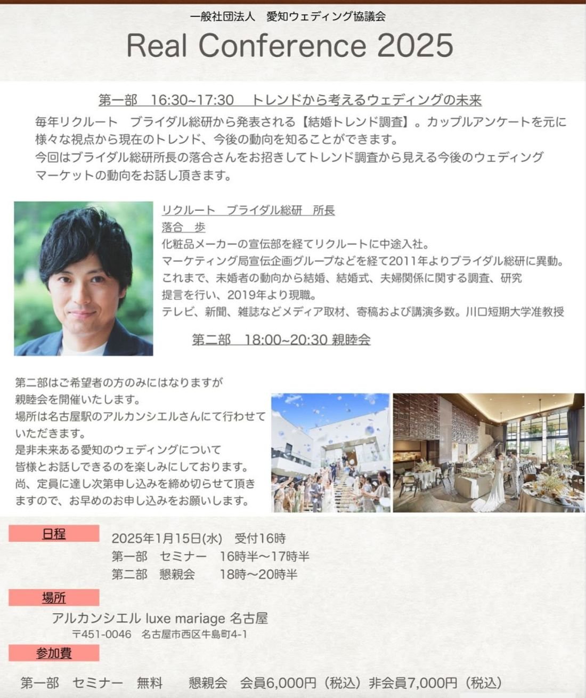

リアルカンファレンス2025の開催が決定しました。
2024年も残りわずかとなり、年末にかけて繁忙期をお過ごしのことと思います。いつもお疲れさまです。

変わりゆくウェディングの、新たな切り口や方法を提案していくため——愛知ウェディング協議会では、ブライダル総研 所長 落合 歩 氏をお迎えします。毎年リクルート ブライダル総研から発表される【結婚トレンド調査】。カップルアンケートを元に、様々な視点から現在のトレンド、今後の動向を知ることができます。今回は、トレンド調査から見える今後のウェディングマーケットの動向をお話しいただきます。
日々の現場での実感は、確かなデータと重ね合わせることで、より輪郭がはっきりします。「なんとなく感じていた変化」が「調査ではこう表れている」と裏づけられたとき、次の一手は、もっと自信をもって踏み出せるようになります。トレンド調査というたしかな土台から、これからのウェディングを一緒に展望しましょう。
化粧品メーカーの宣伝部を経てリクルートに中途入社。マーケティング局宣伝企画グループなどを経て2011年よりブライダル総研に異動。これまで、未婚者の動向から結婚、結婚式、夫婦関係に関する調査、研究提言を行い、2019年より現職。テレビ、新聞、雑誌などメディア取材、寄稿および講演多数。川口短期大学准教授。
今回は、愛知ウェディング協議会の会員様であるアルカンシエル luxe mariage 名古屋様をお借りして開催いたします！ 会員の会場で開催できることは、協議会にとって大きな喜びです。実際の会場の雰囲気を感じながら学べるのも、リアル開催ならではの魅力です。
第二部はご希望者の方のみとなりますが、親睦会を開催いたします。是非、未来ある愛知のウェディングについて皆様とお話しできるのを楽しみにしております。尚、定員に達し次第申し込みを締め切らせていただきますので、お早めのお申し込みをお願いします。
以下のいずれかの方法でお申し込みください。
セミナーは無料です。会員の皆さま、そして非会員の皆さまも、ぜひこの機会にご参加ください。みなさまのご参加、お待ちしております！